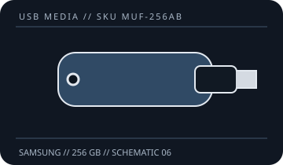

[ REMOVABLE MEDIA // USB FLASH DRIVE ]
FIT Plus 256 GB (MUF-256AB)
A model- and capacity-specific record for the removable USB flash-drive device, not a general promise for every revision sold under the same family name. Verify the complete SKU and capacity on the label.

PRODUCT: Samsung FIT Plus 256 GB (MUF-256AB). A physical USB connector fit does not prove that a host supports the drive's capacity, filesystem, power needs, or advertised bus mode.
Model, interface and compatibility
| Manufacturer model / SKU | Samsung FIT Plus 256 GB (MUF-256AB) |
|---|---|
| Nominal capacity | 256 GB; formatted usable space is lower and varies by filesystem and host. |
| USB generation / connector | USB 3.1 Gen 1 (USB 3.0; marketed as USB 3.2 Gen 1 in newer naming); USB Type-A. |
| Host compatibility | USB Type-A host; Samsung describes cross-device use on compatible computers and other devices. Check OS filesystem and partition support, and physical clearance around adjacent ports. USB 2.0 host compatible at the host-supported rate. |
| Dimensions | 23.6 × 18.8 × 7.3 mm; dimensions are manufacturer-stated for the named model/family. |
| Manufacturer speed claim | No speed figure stated in this record unless tied to the capacity-specific Samsung product page; verify current listing before relying on a maximum. |
| Encryption | The FIT Plus documentation cited here does not specify hardware encryption. |
Wear, encryption and preservation caveats
Flash memory wears with writes, and controller, NAND, firmware, age, temperature, and storage conditions affect retention and failure risk. No shelf-life or archival-life guarantee is inferred from this product record. The manufacturer documentation cited here does not establish a guaranteed service life or archival retention period.
- The FIT Plus documentation cited here does not specify hardware encryption. Do not treat an unencrypted USB stick as a secure transport or a sole copy of important data.
- Write endurance, wear-leveling behavior, and power-loss recovery are not quantified here unless explicitly stated by the manufacturer for this exact SKU; do not infer them from a speed or warranty claim.
- Use safe removal where required by the host's write cache, keep the device dry and protected from impact, and do not remove it during activity.
- For preservation, keep at least two independent additional copies, record checksums, periodically read/verify the data, and migrate it to supported media. Flash storage is not a substitute for a preservation plan.
Manufacturer sources
- Samsung — FIT Plus USB flash drive product detailsManufacturer source for the identified product family/SKU; capacity and revision markings should be matched to the physical unit.
- Samsung — FIT Plus support and specificationsManufacturer source for the identified product family/SKU; capacity and revision markings should be matched to the physical unit.
Any stated maximum speed is a manufacturer claim, not a guaranteed sustained rate; real results depend on the complete host path, file sizes, filesystem, and device revision.